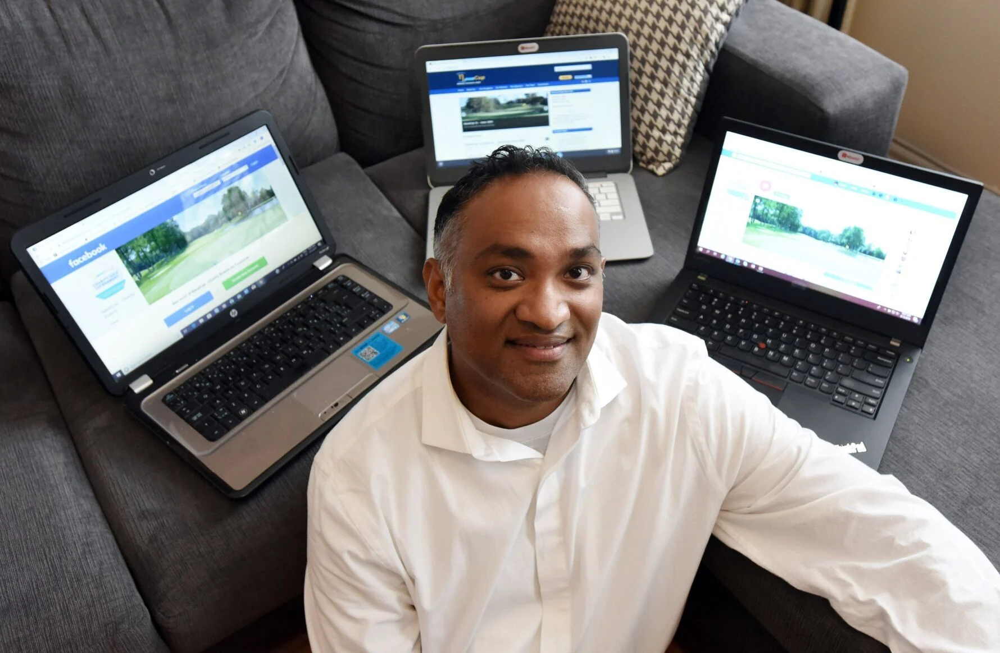

Meet the NavaCup team

Ganesh Navaratnarajah is the founder of the NavaCup initiative. Ganesh holds a degree in Aerospace Engineering from Toronto Metropolitan University. Coupling his engineering degree with several self-taught IT principles, Ganesh worked for several companies in an IT capacity before opening his own IT consulting firm.
Currently living in Toronto and having grown up in East Scarborough, Ganesh has witnessed first-hand the effects of the digital divide in urban environments. His drive to create NavaCup events is based on the premise that all youth in his community should be afforded the same opportunities as their peers for learning and growth.
Ganesh is a sports fanatic who especially enjoys being active in Volleyball, Soccer, and Tennis. Those tournament shoes come off the golf course too!
Managing Director of Boardwalk Creative, Aaron brings a wealth of community development experience and creative leadership. A graduate of the University of New Brunswick, Aaron is passionate about connecting brands with meaningful causes.

With a background spanning Ryerson University, Hard Rock Cafe, and Hallmark, Shamila brings extensive community relations expertise. Her passion for social impact and genuine connection makes her the voice of NavaCup in the community.
With experience at Citigroup New York and CIBC, and a Political Science degree from the University of Toronto, Radhika ensures every dollar raised is accounted for and maximized. Her financial acumen keeps NavaCup lean and impact-focused.

Client Relations Manager at ASSOCIUM with a UWO Economics background, Jennifer manages NavaCup's donor and partner relationships with professionalism and warmth. A Scarborough native, she brings deep local knowledge and dedication to every interaction.